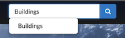

Content Discovery in Exchange
Local Content
-
Exchange Search - You will find the
 field at the top of every Exchange page. When you type in the field, Exchange will list the Layers, Maps, and Documents that match the text you’ve entered. Select on the word in the list to go to that resource.
field at the top of every Exchange page. When you type in the field, Exchange will list the Layers, Maps, and Documents that match the text you’ve entered. Select on the word in the list to go to that resource.
-
Browsing Layers - The Layers page lets you browse data that has been uploaded to this GeoNode. From the Layers page, you can see how many times a layer has been viewed and it’s average user rating. You can also Download the layer data, create a map, or go to a the layer detail page.
-
View by Layer Type - The view in the layers page can be subset by Raster or Vector.
-
Browsing Maps - The Maps page lets you browse data that has been uploaded to this GeoNode. From the Maps page, you can see how many times a map has been viewed and it’s average user rating. You can also Download the layers for the map, view the map, or go to a the map detail page for more information.
-
Filtering Results - There are several different ways to manage the list of the maps, layers or documents you’re viewing. The Layers, Maps and Documents pages provide the ability to filter by categories, date range, or keywords.
-
Filter by Text - Just as the
field, Filter by Text will filter the results by text you've entered.
-
Filter by Type (Layers Page Only) - You can filter results by Raster, Remote, Vector and WMS.

-
Filter by Document Type (Documents Page Only) - You can filter results by a specific Document Type.

-
Filter by Category - You can filter Layers or Maps by Categories. When the metadata for a layer or a map has been tagged with a specific category, it will be reflected in the Categories panel. Clicking on the first category limits the layer list to those tagged with that category. Clicking on another category adds the layers from that category to the layer list. Clicking on the category again will remove it from the layer list.

-
Filter by Keywords - You can filter the Layers or Maps associated with a particular keyword. The keywords are saved in the metadata. To edit the keywords for an item you need to go to the Edit Metadata tab for the specific item (map, layer or document).

-
Filter by Owners - You can filter the Layers or Maps by a specific user that owns the data.

-
Filter by Date - You can limit the list of layers or maps by a date range. In the Date panel select the start date and the end date for the date range. The view will update to reflect those layers or maps that were created within that timeframe.

-
Filter by Regions - You can filter also by entering a geographical region.

-
Filter by Extent - You can filter by extent using the search overview map.

-
Registry Catalogue Service for the Web (CSW)
CSW (Catalogue Service for the Web) is an OGC (Open Geospatial Consortium) specification that defines common interfaces to discover, browse, and query metadata about data, services, and other potential resources.
Registry provides access to its catalogue via the CSW standard for all metadata at varying levels of granularity. Any client supporting CSW (desktop, GIS, web application, client library, etc.) can integrate the Registry CSW endpoints.
Interacting with the Registry CSW
The Registry CSW endpoints are implemented using pycsw. pycsw is an OGC CSW server implementation written in Python, enabling the publishing and discovery of data and services, providing a standards-based metadata and catalogue component of spatial data infrastructures. pycsw is Certified OGC Compliant and is an OGC Reference Implementation.
Registry CSW endpoints
The Registry CSW endpoints support the OGC CSW standard (2.0.2 and 3.0.0) as well as the ISO Metadata Application 1.0.0 Profile. The CSW endpoints operate over HTTP GET, POST (XML) and SOAP. Additional discovery APIs supported include OpenSearch Geo and Time, OAI-PMH and SRU.
Making HTTP POST (XML) requests
While making HTTP GET requests is relatively straightforward, HTTP POST (XML) requests require the client to open the connection and send the request XML as the payload. Below are a few examples on how to run HTTP POST (XML) requests on the command line:
# assuming XML request is saved to csw-request.xml
# curl
curl -X POST -d @csw-request.xml http://catalog.data.gov/csw
# lwp-request
cat csw-request.xml | POST http://catalog.data.gov/csw
# wget
wget http://catalog.data.gov/csw --post-file=csw-request.xml
Service Endpoints
The URL of the Registry CSW is found at http://exchange-dev.boundlessps.com/registry/search/csw
GetCapabilities
The GetCapabilities operation provides CSW clients with service metadata about the CSW service as an XML document.
Examples:
HTTP GET: http://exchange-dev.boundlessps.com/registry/search/csw?service=CSW&version=2.0.2&request=GetCapabilities
HTTP POST (XML):
<csw:GetCapabilities xmlns:csw="http://www.opengis.net/cat/csw/2.0.2" xmlns:ows="http://www.opengis.net/ows" xmlns:xsi="http://www.w3.org/2001/XMLSchema-instance" xsi:schemaLocation="http://www.opengis.net/cat/csw/2.0.2 http://schemas.opengis.net/csw/2.0.2/CSW-discovery.xsd" service="CSW">
<ows:AcceptVersions>
<ows:Version>2.0.2</ows:Version>
</ows:AcceptVersions>
<ows:AcceptFormats>
<ows:OutputFormat>application/xml</ows:OutputFormat>
</ows:AcceptFormats>
</csw:GetCapabilities>
DescribeRecord
The DescribeRecord operation provides CSW clients with elements of supported information models of the CSW service.
Examples:
HTTP GET: http://exchange-dev.boundlessps.com/registry/search/csw?service=CSW&version=2.0.2&request=DescribeRecord
HTTP POST (XML):
<csw:DescribeRecord service="CSW" version="2.0.2" outputFormat="application/xml" schemaLanguage="http://www.w3.org/XML/Schema" xmlns:csw="http://www.opengis.net/cat/csw/2.0.2" xmlns:xsi="http://www.w3.org/2001/XMLSchema-instance" xsi:schemaLocation="http://www.opengis.net/cat/csw/2.0.2 http://schemas.opengis.net/csw/2.0.2/CSW-discovery.xsd">
<csw:TypeName>csw:Record</csw:TypeName>
</csw:DescribeRecord>
GetDomain
The GetDomain operation provides an interface to return all possible values for a given metadata property/queryable or parameter.
Examples:
HTTP GET: http://exchange-dev.boundlessps.com/registry/search/csw?service=CSW&version=2.0.2&request=GetDomain&propertyname=dc:type
http://exchange-dev.boundlessps.com/registry/search/csw?service=CSW&version=2.0.2&request=GetDomain¶metername=GetRecords.outputSchema
HTTP POST (XML):
<csw:GetDomain xmlns:csw="http://www.opengis.net/cat/csw/2.0.2" xmlns:xsi="http://www.w3.org/2001/XMLSchema-instance" xsi:schemaLocation="http://www.opengis.net/cat/csw/2.0.2 http://schemas.opengis.net/csw/2.0.2/CSW-discovery.xsd" version="2.0.2" service="CSW">
<csw:PropertyName>dc:type</csw:PropertyName>
</csw:GetDomain>
<csw:GetDomain xmlns:csw="http://www.opengis.net/cat/csw/2.0.2" xmlns:xsi="http://www.w3.org/2001/XMLSchema-instance" xsi:schemaLocation="http://www.opengis.net/cat/csw/2.0.2 http://schemas.opengis.net/csw/2.0.2/CSW-discovery.xsd" version="2.0.2" service="CSW">
<csw:ParameterName>GetRecords.outputSchema</csw:ParameterName>
</csw:GetDomain>
GetRecords
The GetRecords operation provides a query interface to search for data both using spatial predicates as well as attribute / temporal queries, or both. GetRecords queries are best invoked as HTTP POST (XML). Examples:
Notes:
-
Adjust the startPosition and maxRecords parameters to customize / page responses
-
Adjust the optional outputSchema parameter to customize output format (default is Dublin Core [http://www.opengis.net/cat/csw/2.0.2], use http://www.isotc211.org/2005/gmd for ISO)
-
Bounding box queries and responses always use axis order latitude longitude
-
Adjust the optional csw:ElementSetName parameter (brief, summary [default], full) to adjust verbosity of metadata record responses. The following table provides an overview of the elements returned:
Returnable elements
| csw:ElementSetName | Elements Returned |
|---|---|
| brief | dc:identifier, dc:title, dc:type, ows:BoundingBox |
| summary | brief + dc:format, dc:subject, dct:modified, dc:abstract, dct:references |
| full | summary + dc:date, dc:creator, dc:publisher, dc:contributor, dc:source, dc:language, dc:rights |
Query all records, return records 1 - 15:
<csw:GetRecords xmlns:csw="http://www.opengis.net/cat/csw/2.0.2" service="CSW" version="2.0.2" resultType="results" startPosition="1" maxRecords="15" outputFormat="application/xml" outputSchema="http://www.opengis.net/cat/csw/2.0.2" xmlns:xsi="http://www.w3.org/2001/XMLSchema-instance" xsi:schemaLocation="http://www.opengis.net/cat/csw/2.0.2 http://schemas.opengis.net/csw/2.0.2/CSW-discovery.xsd">
<csw:Query typeNames="csw:Record">
<csw:ElementSetName>full</csw:ElementSetName>
</csw:Query>
</csw:GetRecords>
Query records with a bounding box:
<csw:GetRecords xmlns:csw="http://www.opengis.net/cat/csw/2.0.2" xmlns:ogc="http://www.opengis.net/ogc" service="CSW" version="2.0.2" resultType="results" startPosition="1" maxRecords="5" outputFormat="application/xml" outputSchema="http://www.opengis.net/cat/csw/2.0.2" xmlns:xsi="http://www.w3.org/2001/XMLSchema-instance" xsi:schemaLocation="http://www.opengis.net/cat/csw/2.0.2 http://schemas.opengis.net/csw/2.0.2/CSW-discovery.xsd" xmlns:gml="http://www.opengis.net/gml">
<csw:Query typeNames="csw:Record">
<csw:ElementSetName>brief</csw:ElementSetName>
<csw:Constraint version="1.1.0">
<ogc:Filter>
<ogc:BBOX>
<ogc:PropertyName>ows:BoundingBox</ogc:PropertyName>
<gml:Envelope>
<gml:lowerCorner>47 -5</gml:lowerCorner>
<gml:upperCorner>55 20</gml:upperCorner>
</gml:Envelope>
</ogc:BBOX>
</ogc:Filter>
</csw:Constraint>
</csw:Query>
</csw:GetRecords>
Query records by attribute:
<csw:GetRecords xmlns:csw="http://www.opengis.net/cat/csw/2.0.2" xmlns:ogc="http://www.opengis.net/ogc" service="CSW" version="2.0.2" resultType="results" startPosition="1" maxRecords="10" outputFormat="application/xml" outputSchema="http://www.opengis.net/cat/csw/2.0.2" xmlns:xsi="http://www.w3.org/2001/XMLSchema-instance" xsi:schemaLocation="http://www.opengis.net/cat/csw/2.0.2 http://schemas.opengis.net/csw/2.0.2/CSW-discovery.xsd" xmlns:gmd="http://www.isotc211.org/2005/gmd" xmlns:apiso="http://www.opengis.net/cat/csw/apiso/1.0">
<csw:Query typeNames="csw:Record">
<csw:ElementSetName>brief</csw:ElementSetName>
<csw:Constraint version="1.1.0">
<ogc:Filter>
<ogc:PropertyIsLike matchCase="false" wildCard="%" singleChar="_" escapeChar="\">
<ogc:PropertyName>dc:title</ogc:PropertyName>
<ogc:Literal>roads%</ogc:Literal>
</ogc:PropertyIsLike>
</ogc:Filter>
</csw:Constraint>
</csw:Query>
</csw:GetRecords>
Query records by full text search:
<csw:GetRecords xmlns:csw="http://www.opengis.net/cat/csw/2.0.2" xmlns:ogc="http://www.opengis.net/ogc" service="CSW" version="2.0.2" resultType="results" startPosition="1" maxRecords="5" outputFormat="application/xml" outputSchema="http://www.opengis.net/cat/csw/2.0.2" xmlns:xsi="http://www.w3.org/2001/XMLSchema-instance" xsi:schemaLocation="http://www.opengis.net/cat/csw/2.0.2 http://schemas.opengis.net/csw/2.0.2/CSW-discovery.xsd">
<csw:Query typeNames="csw:Record">
<csw:ElementSetName>brief</csw:ElementSetName>
<csw:Constraint version="1.1.0">
<ogc:Filter>
<ogc:PropertyIsEqualTo>
<ogc:PropertyName>csw:AnyText</ogc:PropertyName>
<ogc:Literal>roads</ogc:Literal>
</ogc:PropertyIsEqualTo>
</ogc:Filter>
</csw:Constraint>
</csw:Query>
</csw:GetRecords>
Partial response:
<!-- pycsw 2.0.0 -->
<csw:GetRecordsResponse version="2.0.2" xsi:schemaLocation="http://www.opengis.net/cat/csw/2.0.2 http://schemas.opengis.net/csw/2.0.2/CSW-discovery.xsd">
<csw:SearchStatus timestamp="2016-08-01T13:10:38Z"/>
<csw:SearchResults nextRecord="6" numberOfRecordsMatched="27724" numberOfRecordsReturned="5" recordSchema="http://www.opengis.net/cat/csw/2.0.2" elementSet="brief">
......
Query records by combined bounding box and full text search:
<csw:GetRecords xmlns:csw="http://www.opengis.net/cat/csw/2.0.2" xmlns:gml="http://www.opengis.net/gml" xmlns:ogc="http://www.opengis.net/ogc" service="CSW" version="2.0.2" resultType="results" startPosition="1" maxRecords="5" outputFormat="application/xml" outputSchema="http://www.opengis.net/cat/csw/2.0.2" xmlns:xsi="http://www.w3.org/2001/XMLSchema-instance" xsi:schemaLocation="http://www.opengis.net/cat/csw/2.0.2 http://schemas.opengis.net/csw/2.0.2/CSW-discovery.xsd">
<csw:Query typeNames="csw:Record">
<csw:ElementSetName>brief</csw:ElementSetName>
<csw:Constraint version="1.1.0">
<ogc:Filter>
<ogc:And>
<ogc:PropertyIsEqualTo>
<ogc:PropertyName>csw:AnyText</ogc:PropertyName>
<ogc:Literal>roads</ogc:Literal>
</ogc:PropertyIsEqualTo>
<ogc:BBOX>
<ogc:PropertyName>ows:BoundingBox</ogc:PropertyName>
<gml:Envelope>
<gml:lowerCorner>47 -5</gml:lowerCorner>
<gml:upperCorner>55 20</gml:upperCorner>
</gml:Envelope>
</ogc:BBOX>
</ogc:And>
</ogc:Filter>
</csw:Constraint>
</csw:Query>
</csw:GetRecords>
Query the total number of records in the catalogue (HTTP GET):
http://exchange-dev.boundlessps.com/registry/search/csw?service=CSW&version=2.0.2&request=GetRecords&typenames=csw:Record&elementsetname=brief
GetRecordById
The GetRecordById operation returns defailed information for specific metadata records.
Examples:
HTTP GET:
http://exchange-dev.boundlessps.com/registry/search/csw?service=CSW&version=2.0.2&request=GetRecordById&id=16bbf4f8-8e88-45c6-a76b-6af51b2b3555&elementsetname=full
HTTP GET (ISO 19139):
http://exchange-dev.boundlessps.com/registry/search/csw?service=CSW&version=2.0.2&request=GetRecordById&id=16bbf4f8-8e88-45c6-a76b-6af51b2b3555&elementsetname=full&outputSchema=http://www.isotc211.org/2005/gmd
HTTP GET (ISO 19139 brief):
http://exchange-dev.boundlessps.com/registry/search/csw?service=CSW&version=2.0.2&request=GetRecordById&id=16bbf4f8-8e88-45c6-a76b-6af51b2b3555&elementsetname=brief&outputSchema=http://www.isotc211.org/2005/gmd
HTTP POST (XML):
<csw:GetRecordById service="CSW" version="2.0.2" outputFormat="application/xml" outputSchema="http://www.opengis.net/cat/csw/2.0.2" xmlns:csw="http://www.opengis.net/cat/csw/2.0.2" xmlns:xsi="http://www.w3.org/2001/XMLSchema-instance" xsi:schemaLocation="http://www.opengis.net/cat/csw/2.0.2 http://schemas.opengis.net/csw/2.0.2/CSW-discovery.xsd">
<csw:Id>16bbf4f8-8e88-45c6-a76b-6af51b2b3555</csw:Id>
<csw:ElementSetName>full</csw:ElementSetName>
</csw:GetRecordById>
OpenSearch Geo and Time Extensions
The Registry CSW endpoints support the OGC OpenSearch Geo and Time Extensions 1.0 standard. This provides a lightweight mechanism to query the catalogue via HTTP GET for simple spatial and temporal searches.
To query the Registry via OpenSearch, requests must be specificed with mode=opensearch. The following parameters are supported:
- {searchTerms} (keywords)
- {geo:box} (bounding box of minx,miny,maxx,maxy)
- {time:start} and {time:end} (temporal)
Specifying combinations of these parameters constitutes an exclusive search.
Examples:
Autodiscovery:
http://exchange-dev.boundlessps.com/registry/search/csw?mode=opensearch&service=CSW&version=2.0.2&request=GetCapabilities
Keywords:
http://exchange-dev.boundlessps.com/registry/search/csw?mode=opensearch&service=CSW&version=2.0.2&request=GetRecords&elementsetname=full&resulttype=results&typenames=csw:Record&q=idaho
Bounding Box:
http://exchange-dev.boundlessps.com/registry/search/csw?mode=opensearch&service=CSW&version=2.0.2&request=GetRecords&elementsetname=full&resulttype=results&typenames=csw:Record&bbox=-140,20,-40,40
Temporal Extent (range):
http://exchange-dev.boundlessps.com/registry/search/csw?mode=opensearch&service=CSW&version=2.0.2&request=GetRecords&elementsetname=full&resulttype=results&typenames=csw:Record&time=2001/2004
Temporal Extent (since 2004):
http://exchange-dev.boundlessps.com/registry/search/csw?mode=opensearch&service=CSW&version=2.0.2&request=GetRecords&elementsetname=full&resulttype=results&typenames=csw:Record&time=2004/
Temporal Extent (before 2004):
http://exchange-dev.boundlessps.com/registry/search/csw?mode=opensearch&service=CSW&version=2.0.2&request=GetRecords&elementsetname=full&resulttype=results&typenames=csw:Record&time=/2004
Temporal Extent (2001/2007) and Keywords:
http://exchange-dev.boundlessps.com/registry/search/csw?mode=opensearch&service=CSW&version=2.0.2&request=GetRecords&elementsetname=full&resulttype=results&typenames=csw:Record&time=2001/2007&q=fauna
Temporal Extent (2001/2007) and Bounding Box:
http://exchange-dev.boundlessps.com/registry/search/csw?mode=opensearch&service=CSW&version=2.0.2&request=GetRecords&elementsetname=full&resulttype=results&typenames=csw:Record&time=2001/2007&bbox=-140,20,-40,40
Keywords and Bounding Box:
http://exchange-dev.boundlessps.com/registry/search/csw?mode=opensearch&service=CSW&version=2.0.2&request=GetRecords&elementsetname=full&resulttype=results&typenames=csw:Record&q=vegetation&bbox=-140,20,-40,40
Transactions
Registry's CSW service, powered by pycsw, has the ability to process CSW Harvest and Transaction requests (CSW-T). Registry's pycsw implementation of CSW-T has been tuned to work with Registry workflows for adding supported services.
Authentication
CSW-T are be enabled within Registry by default. HTTP basic authentication is required to insert/update/delete services from Registry via CSW-T. Note you can also use Registry's admin console to insert/update/delete services. Registry CSW-T responses will respond immediately with success and Registry will begin to harvest the service asynchronously.
Supported Resource Types
For CSW transactions and harvesting, Registry supports the following metadata resource types:
| Name | CSW ResourceType |
|---|---|
| Catalogue Service for the Web (CSW) | http://www.opengis.net/cat/csw/2.0.2 |
| Web Map Service (WMS) | http://www.opengis.net/wms |
| Web Map Tile Service (WMTS) | http://www.opengis.net/wmts/1.0 |
| Tile Map Service (TMS) | https://wiki.osgeo.org/wiki/TMS |
| ArcGIS REST MapServer | urn:x-esri:serviceType:ArcGIS:MapServer |
| ArcGIS REST ImageServer | urn:x-esri:serviceType:ArcGIS:ImageServer |
| Harvard WorldMap | http://worldmap.harvard.edu/ |
| Mapwarper | https://github.com/timwaters/mapwarper |
Examples
Note: Your network must be able to make outgoing HTTP requests for this functionality.
Note: CSW-T Harvest requests require only the base URL of a given service (not fully GetCapabilities request URLs).
Note: CSW-T Harvest requests are identical in structure and syntax, with the differences being in the HTTP GET resourcetype / HTTP POST csw:ResourceType parameter being one of the abovementioned ResourceType's, as well as the HTTP GET source / HTTP POST csw:Source parameter being the desired service to add.
Harvest a WMS
HTTP GET:
http://exchange-dev.boundlessps.com/registry/search/csw?service=CSW&version=2.0.2&request=Harvest&resourcetype=http://www.opengis.net/wms&source=http://host/wms
HTTP POST (XML):
<csw:Harvest xmlns:csw="http://www.opengis.net/cat/csw/2.0.2" xmlns:xsi="http://www.w3.org/2001/XMLSchema-instance" xsi:schemaLocation="http://www.opengis.net/cat/csw/2.0.2 http://schemas.opengis.net/csw/2.0.2/CSW-publication.xsd" service="CSW" version="2.0.2">
<csw:Source>http://host/wms</csw:Source>
<csw:ResourceType>http://www.opengis.net/wms</csw:ResourceType>
</Harvest>
Result
<csw:HarvestResponse xmlns:csw="http://www.opengis.net/cat/csw/2.0.2" xmlns:dc="http://purl.org/dc/elements/1.1/" xmlns:xsi="http://www.w3.org/2001/XMLSchema-instance" xsi:schemaLocation="http://www.opengis.net/cat/csw/2.0.2 http://schemas.opengis.net/csw/2.0.2/CSW-publication.xsd">
<csw:TransactionResponse version="2.0.2">
<csw:TransactionSummary>
<csw:totalInserted>34</csw:totalInserted>
<csw:totalUpdated>0</csw:totalUpdated>
<csw:totalDeleted>0</csw:totalDeleted>
</csw:TransactionSummary>
<csw:InsertResult>
<csw:BriefRecord>
<dc:identifier>1</dc:identifier>
<dc:title>http://host/wms</dc:title>
</csw:BriefRecord>
</csw:InsertResult>
</csw:TransactionResponse>
</csw:HarvestResponse>
Harvest a CSW
Note: CSW-T Harvest requests made against a remote CSW will scrape the remote CSW for services and attempt to harvest those services into Registry.
HTTP GET:
http://exchange-dev.boundlessps.com/registry/search/csw?service=CSW&version=2.0.2&request=Harvest&resourcetype=http://www.opengis.net/cat/csw/2.0.2&source=http://host/csw
HTTP POST (XML):
<csw:Harvest xmlns:csw="http://www.opengis.net/cat/csw/2.0.2" xmlns:xsi="http://www.w3.org/2001/XMLSchema-instance" xsi:schemaLocation="http://www.opengis.net/cat/csw/2.0.2 http://schemas.opengis.net/csw/2.0.2/CSW-publication.xsd" service="CSW" version="2.0.2">
<csw:Source>http://host/csw</csw:Source>
<csw:ResourceType>http://www.opengis.net/cat/csw/2.0.2</csw:ResourceType>
</Harvest>
Result
<csw:HarvestResponse xmlns:csw="http://www.opengis.net/cat/csw/2.0.2" xmlns:dc="http://purl.org/dc/elements/1.1/" xmlns:xsi="http://www.w3.org/2001/XMLSchema-instance" xsi:schemaLocation="http://www.opengis.net/cat/csw/2.0.2 http://schemas.opengis.net/csw/2.0.2/CSW-publication.xsd">
<csw:TransactionResponse version="2.0.2">
<csw:TransactionSummary>
<csw:totalInserted>34</csw:totalInserted>
<csw:totalUpdated>0</csw:totalUpdated>
<csw:totalDeleted>0</csw:totalDeleted>
</csw:TransactionSummary>
<csw:InsertResult>
<csw:BriefRecord>
<dc:identifier>1</dc:identifier>
<dc:title>http://host/csw</dc:title>
</csw:BriefRecord>
</csw:InsertResult>
</csw:TransactionResponse>
</csw:HarvestResponse>
Using Registry CSW in QGIS MetaSearch
TODO